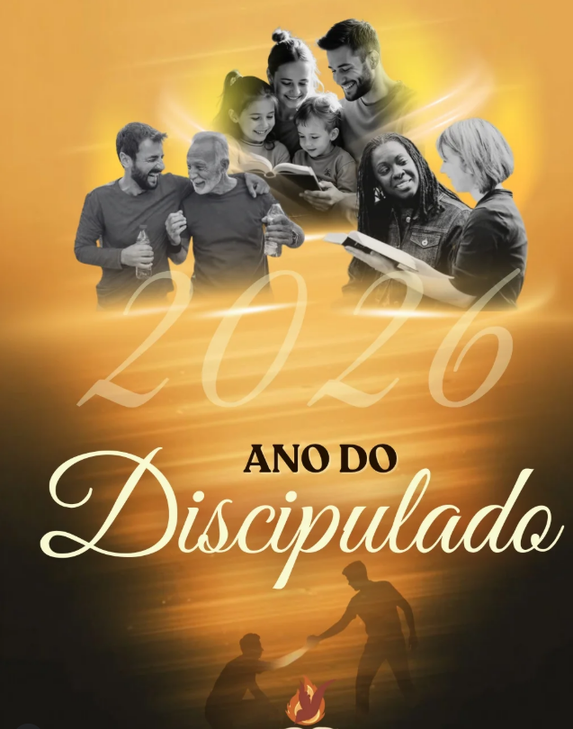
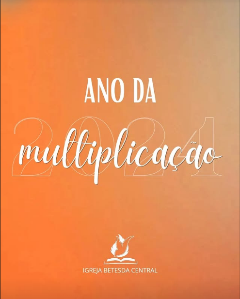
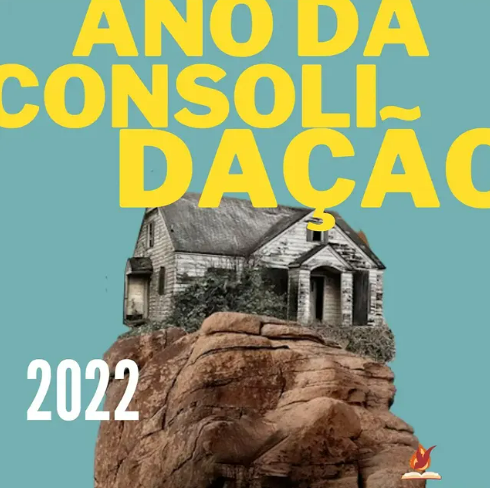
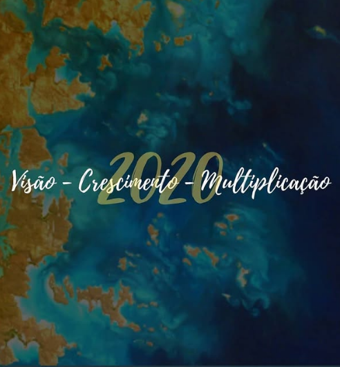

Transformação Espiritual
- Renovação da mente
- Cultivo da intimidade com Deus
- Crescimento em santidade
A cada ano, caminhamos juntos como igreja em torno de um propósito que direciona nossa fé, nossa comunhão e nossa missão.

O discipulado é o coração pulsante do cristianismo. O discipulado transformador começa com um chamado — um convite divino para uma vida radicalmente diferente.
“Se alguém quer vir após mim, negue-se a si mesmo, dia a dia tome a sua cruz e siga-me.”
Lucas 9:23
O discipulado verdadeiramente transformador alcança todas as áreas da nossa caminhada com Cristo.
A Bíblia nos apresenta histórias de homens e mulheres que foram chamados, ensinados e enviados para cumprir o propósito de Deus.
Vamos formar discípulos de Cristo!
Relembre os temas que marcaram nossa caminhada como igreja ao longo dos anos.
Na Bíblia, a graça é um favor ou uma dádiva de Deus que não é merecida. É um dom gratuito que nos é concedido por intermédio de Jesus Cristo.
A graça é um poder que nos fortalece e nos ajuda a viver uma vida justa e santa, libertos do pecado. É um dom que nos é dado pela fé em Jesus Cristo.
“Porque pela graça sois salvos, mediante a fé; e isto não vem de vós; é dom de Deus; não de obras, para que ninguém se glorie.” Efésios 2:8–9
Na Bíblia, a generosidade é uma virtude que expressa o amor e a graça de Deus. É uma forma de ajudar os outros, compartilhando recursos, tempo, talentos e atenção.
“Mais bem-aventurado é dar que receber.” Atos 20:35
O que recebemos através da graça, devemos expressar através da generosidade.

A multiplicação faz parte do propósito de Deus para o crescimento do seu Reino. Mais do que crescer em número, multiplicar significa gerar frutos, desenvolver pessoas e permitir que aquilo que Deus colocou em nós alcance outras vidas.
A multiplicação acontece quando aquilo que recebemos de Deus passa a alcançar outras pessoas, gerando novos frutos e novos agentes do Reino.
“Nisto é glorificado meu Pai: que deis muito fruto; e assim vos tornareis meus discípulos.” João 15:8
Uma igreja que cresce, gera frutos e multiplica o que Deus confiou a ela.
Edificar significa construir, fortalecer e estabelecer algo sólido. Como igreja, somos chamados a construir nossa vida sobre Cristo, fortalecendo nossa fé, nossos relacionamentos e nossa comunhão.
Somos edificados pela Palavra, pela comunhão, pela oração e pelo serviço, para que também possamos contribuir na edificação de outras vidas.
“Porque ninguém pode lançar outro fundamento, além do que foi posto, o qual é Jesus Cristo.” 1 Coríntios 3:11
Uma igreja edificada em Cristo para edificar vidas.

Consolidar é fortalecer aquilo que foi iniciado, firmando pessoas na fé e ajudando cada uma a desenvolver raízes profundas em Cristo.
A consolidação envolve cuidado, acompanhamento, comunhão e crescimento espiritual. Não queremos apenas receber pessoas, mas caminhar com elas, ajudando-as a permanecer firmes e a descobrir seu propósito no Reino de Deus.
“Assim, já não sois estrangeiros e peregrinos, mas concidadãos dos santos, e sois da família de Deus, edificados sobre o fundamento dos apóstolos e profetas, sendo ele mesmo, Cristo Jesus, a pedra angular.” Efésios 2:19–20
Firmar raízes, fortalecer a fé e permanecer em Cristo.
Ser discípulo de Jesus é muito mais do que conhecer seus ensinamentos. É permitir que sua vida seja transformada por Cristo e aprender a viver segundo sua Palavra.
Mas o chamado não termina em nós. Aqueles que seguem Jesus também são chamados a levar sua mensagem, cuidar de outras pessoas e formar novos discípulos.
“Ide, portanto, fazei discípulos de todas as nações, batizando-os em nome do Pai, e do Filho, e do Espírito Santo.” Mateus 28:19
Ser transformado por Cristo para levar outros a conhecê-lo.

Toda caminhada precisa de direção. A visão nos permite enxergar aquilo que Deus deseja realizar, o crescimento nos conduz ao amadurecimento e a multiplicação nos leva a compartilhar aquilo que recebemos.
Uma igreja com visão não olha apenas para onde está, mas também para onde Deus deseja conduzi-la. Crescer significa amadurecer na fé, fortalecer a comunidade e ampliar nossa capacidade de servir.
“Alarga o espaço da tua tenda; estenda-se o toldo da tua habitação, e não o impeças; alonga as tuas cordas e firma bem as tuas estacas.” Isaías 54:2
Enxergar o propósito, crescer na fé e multiplicar frutos para o Reino.